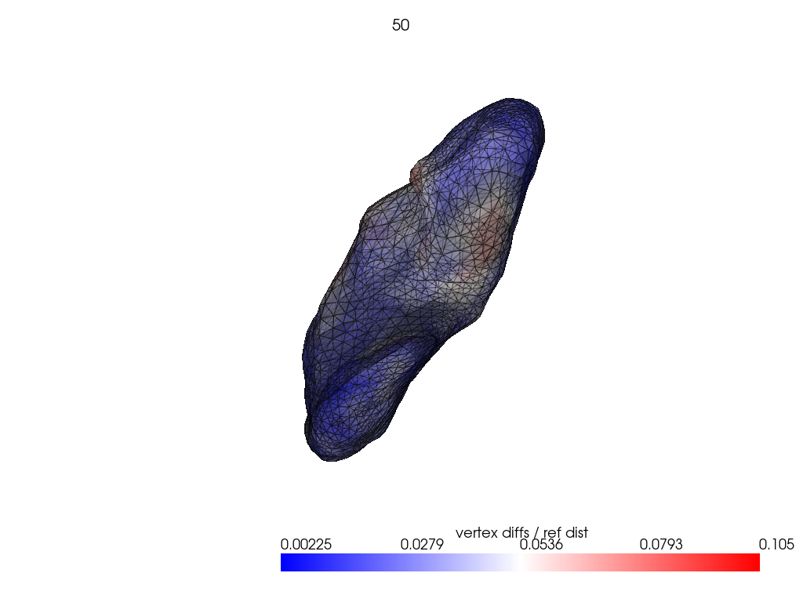

LDDMM: influence of time points#
[1]:
import shutil
from pathlib import Path
import numpy as np
import pyvista as pv
from matplotlib import pyplot as plt
import polpo.lddmm as plddmm
from polpo.mesh.geometry import centroid2farthest_vertex, vertexwise_euclidean
from polpo.mesh.surface import PvSurface
from polpo.mesh.varifold.tuning import SigmaFromLengths
from polpo.plot.pyvista import RegisteredMeshesColoredPlotter
from polpo.preprocessing.load.pregnancy.deformetrica import (
get_two_random_maternal_meshes,
)
[KeOps] Warning : CUDA was detected, but driver API could not be initialized. Switching to CPU only.
[2]:
RECOMPUTE = False
STATIC_VIZ = True
VIZ = 1
if STATIC_VIZ:
pv.set_jupyter_backend("static")
[3]:
STRUCT_NAME = "L_Hipp"
OUTPUTS_DIR = Path.home() / ".polpo/results" / f"lddmm_time_points_{STRUCT_NAME}"
REGISTRATION_DIR = OUTPUTS_DIR / "registration"
if OUTPUTS_DIR.exists() and RECOMPUTE:
shutil.rmtree(OUTPUTS_DIR)
[4]:
meshes = get_two_random_maternal_meshes(
OUTPUTS_DIR,
mesh_names=("source", "target"),
)
[5]:
if VIZ > 1:
pl = pv.Plotter(border=False)
for mesh in meshes:
pl.add_mesh(mesh.as_pv(), show_edges=True, opacity=0.6)
pl.show()
We select the varifold kernel using characteristic lengths.
[6]:
sigma_search = SigmaFromLengths(
ratio_charlen_mesh=2.0,
ratio_charlen=0.25,
)
sigma_search.fit(meshes.values())
metric = sigma_search.optimal_metric_
sigma_search.sigma_
[6]:
np.float64(6.222092151641846)
Following LDDMM: how to register a mesh to a template?.
[7]:
mesh_filenames = list(meshes.keys())
def _registration_dir(n_time_points):
return REGISTRATION_DIR / f"{str(n_time_points)}"
n_time_points = [10, 20, 50]
registration_kwargs = dict(
kernel_width=4.0,
regularisation=1.0,
max_iter=2000,
freeze_control_points=False,
metric="varifold",
tol=1e-16,
attachment_kernel_width=sigma_search.sigma_,
)
for n_time_points_ in n_time_points:
registration_dir = _registration_dir(n_time_points_)
if not registration_dir.exists():
plddmm.registration.estimate_registration(
mesh_filenames[0],
mesh_filenames[1],
output_dir=registration_dir,
number_of_time_steps=n_time_points_,
**registration_kwargs,
)
[8]:
reconstructed = {}
cps = {}
for n_time_points_ in n_time_points:
registration_dir = _registration_dir(n_time_points_)
reconstructed[n_time_points_] = PvSurface(
plddmm.io.load_deterministic_atlas_reconstruction(registration_dir, as_pv=True)
)
cps[n_time_points_] = plddmm.io.load_cp(registration_dir)
[cps_.shape[0] for cps_ in cps.values()]
[8]:
[420, 420, 420]
[10]:
_, target = meshes.values()
{
n_time_points_: metric.dist(target, reconstructed_)
for n_time_points_, reconstructed_ in reconstructed.items()
}
[10]:
{10: np.float64(4.361805517439311),
20: np.float64(4.816243472895335),
50: np.float64(4.77851510780397)}
[11]:
if VIZ > 0:
ref_dist = centroid2farthest_vertex([target])[0]
for name, reconstructed_ in reconstructed.items():
pl = RegisteredMeshesColoredPlotter()
pl.add_meshes(
target.as_pv(),
reconstructed_.as_pv(),
ref_dist=ref_dist,
show_edges=True,
opacity=0.8,
name="vertex diffs / ref dist",
)
pl.add_title(str(name), font_size=8.0)
pl.show()


[12]:
_, ax = plt.subplots()
for name, reconstructed_ in reconstructed.items():
vals = vertexwise_euclidean(target, reconstructed_) / ref_dist
ax.hist(
vals,
weights=1 / len(vals) * np.ones_like(vals),
label=name,
alpha=0.6,
)
ax.set_xlabel("Vertexwise euclidean distances / Ref dist")
ax.set_ylabel("Frequency")
ax.legend(bbox_to_anchor=(1.02, 1), loc="upper left");